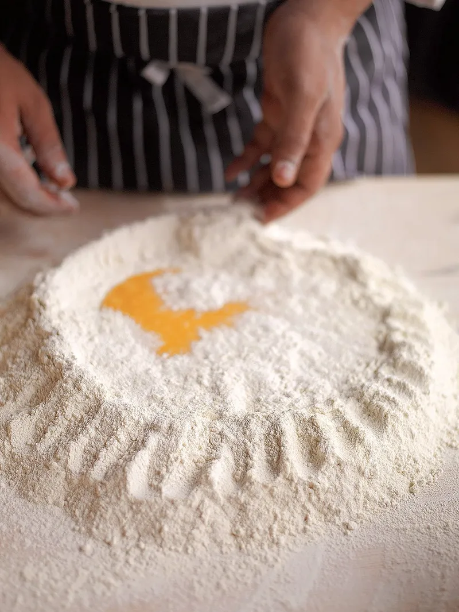

Fresh Egg Pasta

Description
A fresh egg pasta which can be made quickly and rolled out either by hand or machine
Ingredients
per serving
- 100g flour
- 1 egg
- pinch of salt
Steps
- Pile your flour on your clean work surface and mix in your salt
- Create a deep well with your flour. You should see a lot of your work surface surrounded by a high walled ring
of flour
- Crack in your eggs
- Start beating the eggs with a fork. Once it's one colour, start collapsing the well bit by bit into the eggs,
beating all the while.
- Once the mixture becomes too thick to beat, it's time to knead
- Work the dough until it becomes a supple and tack like dough
- Wrap in cling foil/place in a small airtight container and let rest for 25min
- Roll out either with your pasta machine or a rolling pin.
- See my carbonara recipe for a preparation idea